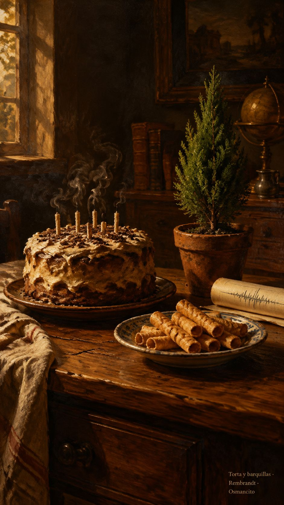

4 de octubre de 2026
Torta, ciprés, barquillas y sismograma
© 2026 Osmancito

Por la mañana le puse al escritorio un vigilante hecho con mis propias manos. Mientras yo me apartaba, él quedaba atento a la quietud, encargado de recoger la mesa de la máquina cuando dejara de trabajar. La asistente había pensado su camino; yo encontré el mío. Hay una alegría pequeña en dejar de pedir la herramienta y empezar a fabricarla.
Después fui al cumpleaños de Ana. Picamos la torta con su mamá, tomamos jugo de fresa y jugamos con los gatos. El día salió de la pantalla y se dejó tocar: migas, vasos, patas que no tienen ninguna obligación de entender nuestras teorías.
Entre la torta y la conversación apareció el interés propio. Hablamos de cómo cada quien busca lo suyo y de la labia con que consigue poner manos ajenas a trabajar para ese deseo. Quien habla puede vestir su conveniencia con la ropa del que escucha, hasta que el otro cree estar siguiendo su propio camino. La pregunta quedó rondando la mesa: cuando alguien me convence, ¿hacia dónde me está llevando?
También hubo que atender a un falso ciprés japonés. Ana creía que podía aguantar aquel sol; yo le pedí que buscara antes de darlo por sentado. El mediodía del trópico no se parece al paisaje que su nombre trae de lejos. Lo rescatamos de ese sol, y la conversación encontró otra forma de avanzar: dejar que el dato se metiera entre nuestras certezas. El árbol no necesitaba que ganáramos una discusión. Necesitaba resguardo.
En el supermercado nuevo nos sentamos a una mesa con Nelly. Ella nos invitó las barquillas, la de Ana, la suya y la mía. El refresco de naranja traía su propia labia: el precio grande prometía lo que la letra pequeña concedía solamente si uno se llevaba más. Ana tenía la parte que parecía bastar; yo llevaba el resto, esos centavos que de pronto dejaron de ser menudencia. Juntamos lo que había y alcanzó justito. La oferta quería llenar el carrito; nosotros queríamos compartir el refresco.
De vuelta en casa, seguí buscando cómo medir un texto sin pedirle a un juez que dictara su importancia. Imaginé sus partes enlazadas, recibiendo peso de otras partes, y la asistente me contó que aquel camino ya tenía nombre. Había llegado por mi cuenta a una puerta conocida. Entramos, miramos, y seguimos: el mapa todavía no era el que yo buscaba.
La noche tomó entonces el camino de Shannon. Quise poner peso a las frases y a las palabras, encontrar sus picos, ver el temblor del corpus. Lo llamé sismograma. Pero no tardé en ponerle su límite a la regla: raro no es significado. El tramposo erudito puede conjugar y palabrear, colgarse palabras insólitas como medallas y engañar a una medida enamorada de la extrañeza. Yo buscaba algo más allá del ruido, algo que siguiera vivo al quitarle los adornos.
Y apareció la cocina. La demi-glace nos prestó su olla: dejar salir el agua sin dejar ir el sabor. Eso quería para el texto, concentrar lo cocinado, conseguir que una cucharada llevara consigo el trabajo del fuego. No amontonar rarezas ni adelgazar hasta volverlo insípido. Dejar que quedara lo que alimenta.
El domingo fue escurriendo así, de la mesa que aprendí a recoger a la mesa donde nos sentamos juntos, del árbol que apartamos del sol al caldo que dejamos reducir. La asistente y yo seguimos buscando el peso de las palabras. Fuera de la máquina, Nelly invitaba barquillas y Ana juntaba conmigo lo que faltaba para un refresco. El sentido también andaba por ahí.
En la copa: una bebida de barquillas.